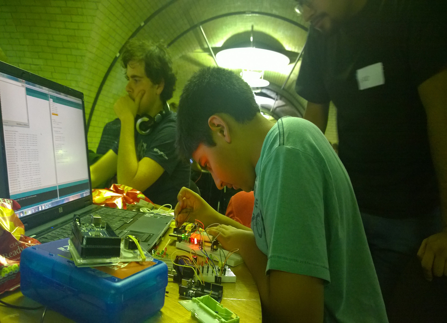

Dhiresh Nathwani
Hardware Hacker - Drone Enthusiast - Perfectionist
dhiresh.nathwani@ldeutc.co.uk
London, UK
Events
Mozzila Festival

I worked with Drum Roll HQ on the Erase All Kittens game, that teaches kids to code through an online hackable and changeable game. I was the leader of a workshop and worked alongside the company with the Friday Science Fair and across all three days, where I was present helping out with different tasks. Successfully completing all these tasks and also talking to new and interested people within the field of drones and aerospace engineering in which I would like to embark my journey on.
FabLab London

I attended an event at the FabLab London, which was one of the key events that changed my view on technological innovation. (for the better) This event opened my eyes to the technology that could help less fortunate, or those from LED's, less-economically developed countries. Technology is not accessible to them as it is for us so being part of a team whose main thesis was to be able to provide LED's or countries that had just experienced a natural disaster with the same Wi-Fi bandwith that we all take for granted today. Once I saw I was able to help the less fortunate with something I use all the time and this would be part of a better community, I knew I wanted to be a part of the technology industry.
Techcrunch Disrupt EU
2014
BanterHack
2014